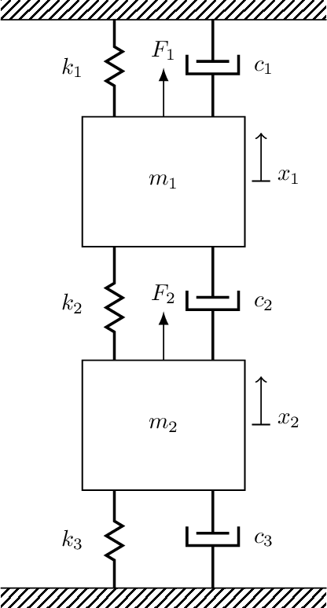
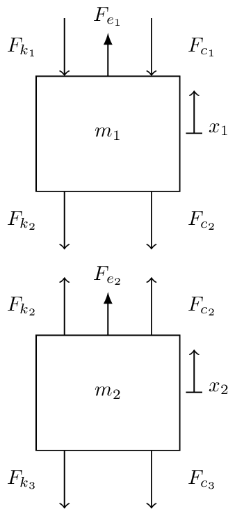
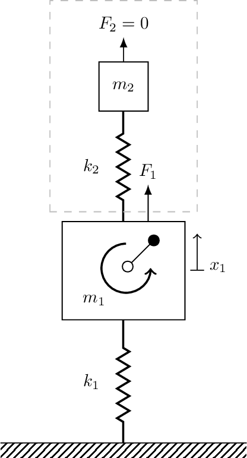
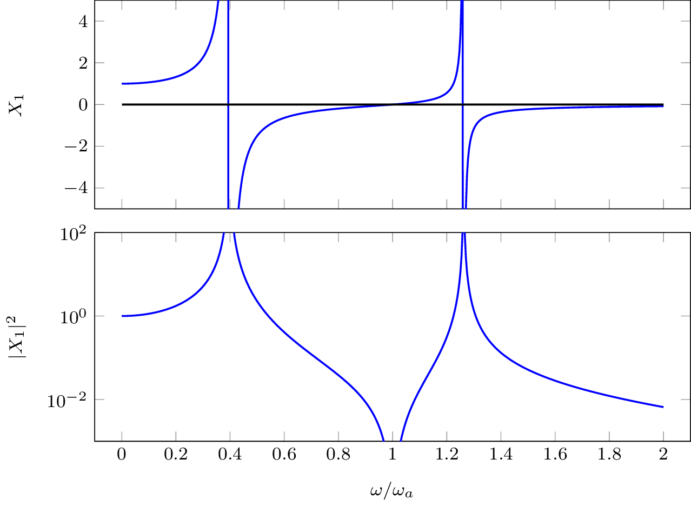
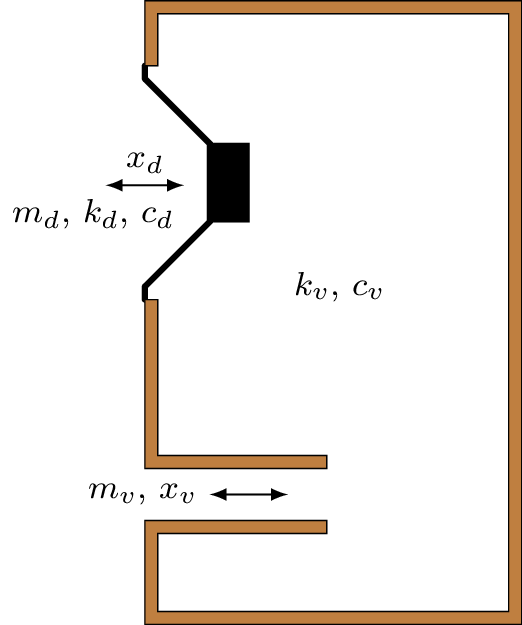
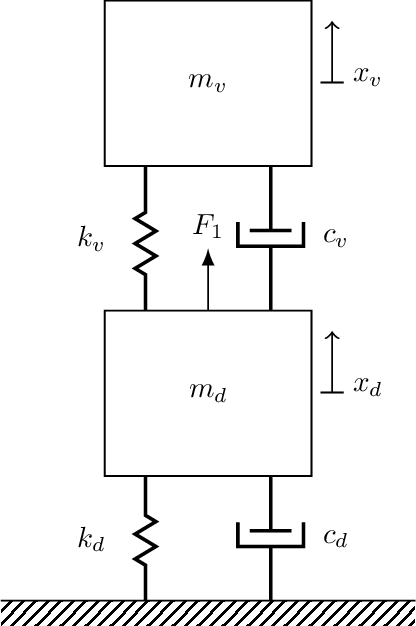
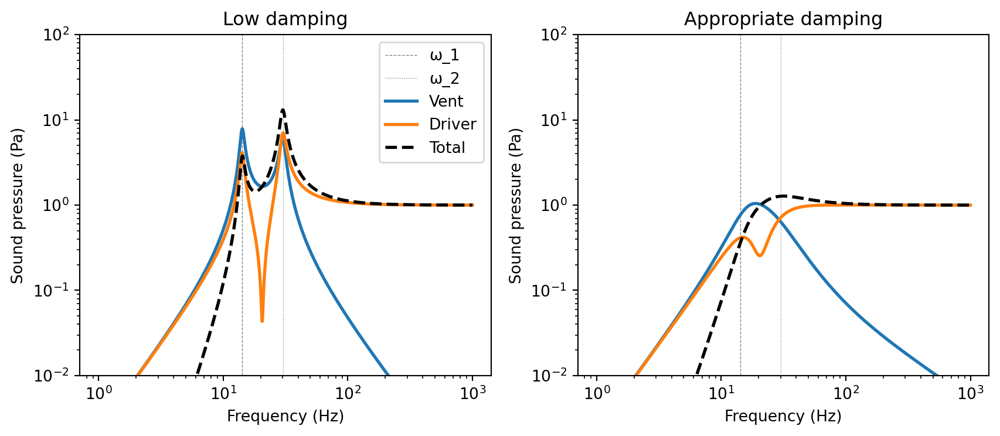
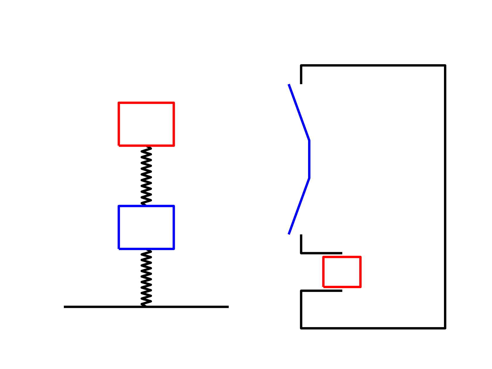
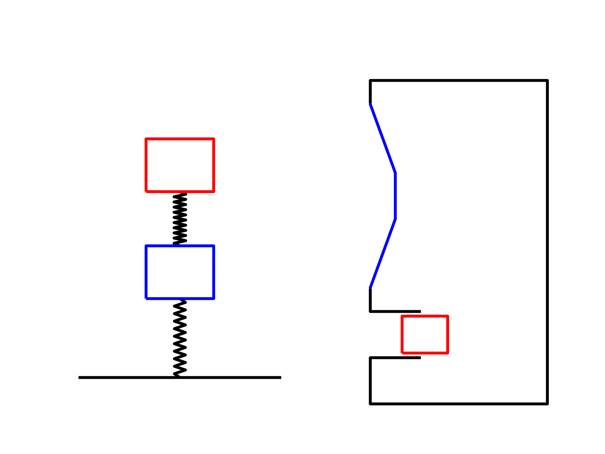
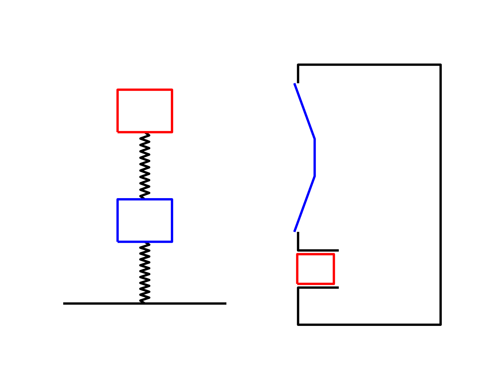

Before we move onto to general \(N\) DoF systems, we will take an intermediate pit stop to consider the special case of the two DoF mass-spring system. Our treatment of the two DoF system wont be as detailed as our previous single DoF system, nor will it be as detailed as our subsequent \(N\) DoF system, but we include it here for two reasons: first, it will allow us to introduce and prove certain concepts (such as orthogonality of mode shapes) without resorting to tools from linear algebra and second, there are some notable two DoF systems that are quite interesting to study, specifically the tuned mass damper and the vented (bass reflex) loudspeaker.
Equations of motion of 2 DoF mass-spring system

Figure 1: Two DoF mass-spring system.
We consdier the two DoF system shown in Figure 1. To derive its equation of motion (EoM) we begin by writing Newton’s second law for each mass, \[
{\begin{align}
\sum_i F_{i,1} &= m_1 \ddot{x}_1\\
\sum_i F_{i,2} &= m_2 \ddot{x}_2
\end{align}}
\] where the subscripts \(1\) and \(2\) denote which mass, or DoF, is being referred to. Drawing a free body diagram (Figure 2), and identifying the forces acting on mass 1, its EoM can be written as, \[
m_1\ddot{x}_1 = F_{e_1} \overbrace{- k_1 x_1 }^{F_{k_1}} \underbrace{-k_2 x_1+k_2 x_2 }_{F_{k_2}=-k_2(x_1-x_2)}\overbrace{-c_1 \dot{x}_1 }^{F_{c_1}} \underbrace{-c_2 \dot{x}_1+c_2 \dot{x}_2 }_{F_{c_2}=-c_2(\dot{x}_1-\dot{x}_2)}
\] Grouping together in terms of displacement and velocity, \[
m_1\ddot{x}_1 = F_{e_1} - (k_1+k_2) x_1 + k_2 x_2 - (c_1+c_2) \dot{x}_1 + c_2 \dot{x}_2
\] and isolating the external force, \[
F_{e_1} = m_1\ddot{x}_1 + (k_1+k_2) x_1 - k_2 x_2 + (c_1+c_2) \dot{x}_1 - c_2 \dot{x}_2
\]

Figure 2
we obtain the EoM for mass 1. What about mass two? As before, starting with Newton’s second law, \[
m_2\ddot{x}_2 = F_{e_2} \overbrace{- k_3 x_2 }^{F_{k_3}} \underbrace{-k_2 x_2+k_2 x_1 }_{F_{k_2}=k_2(x_1-x_2)}\overbrace{-c_3 \dot{x}_2 }^{F_{c_3}} \underbrace{-c_2 \dot{x}_2+c_2 \dot{x}_1 }_{F_{c_2}=c_2(\dot{x}_1-\dot{x}_2)}
\] which leads to the EoM for mass 2, \[
F_{e_2} = m_2\ddot{x}_2 + (k_2+k_3) x_2 - k_2 x_1 + (c_2+c_3) \dot{x}_2 - c_2\dot{x}_1
\]
Together the RoM for the 2 DoF mass spring system are, \[
\begin{align}
F_{e_1} &= m_1\ddot{x}_1 + (k_1+k_2) x_1 {\color{orange}\,-\, k_2 x_2} + (c_1+c_2) \dot{x}_1 {\color{orange}\, -\, c_2 \dot{x}_2}\\
F_{e_2} &= m_2\ddot{x}_2 + (k_2+k_3) x_2 {\color{orange}\,-\, k_2 x_1} + (c_2+c_3) \dot{x}_2 {\color{orange} \,-\, c_2\dot{x}_1}
\end{align}
\tag{1}\] It is important to note that these are not just two independent equations. They are coupled together. This coupling is through the high lighted stiffness and damping terms. We see that the equation for mass 1 depends on the motion of mass 2, and visa versa. This has an important consequence when it comes to solving our EoM, Equation 1 need to be solved together, i.e. simultaneously.
As we move to more complex \(N\) DoF systems, it will become increasingly painful to have to write our the EoM in full, as in Equation 1. For this reason it will be convenient to adopt a matrix and vector representation, \[
\left(\begin{array}{c}
F_{e_1} \\ F_{e_2}
\end{array}\right) = \left[\begin{array}{c c}
m_1 & 0 \\ 0 & m_2
\end{array}\right] \left(\begin{array}{c}
\ddot{x}_1 \\ \ddot{x}_2
\end{array}\right) + \left[\begin{array}{c c}
c_1+c_2 & -c_2 \\ -c_2 & c_2+c_3
\end{array}\right] \left(\begin{array}{c}
\dot{x}_1 \\ \dot{x}_2
\end{array}\right) + \left[\begin{array}{c c}
k_1+k_2 & -k_2 \\ -k_2 & k_2+k_3
\end{array}\right] \left(\begin{array}{c}
x_1 \\ x_2
\end{array}\right)
\] or in more compact notation, \[
\mathbf{f} = \mathbf{M}\mathbf{\ddot{x}} + \mathbf{C}\mathbf{\dot{x}}+ \mathbf{K} \mathbf{x}
\tag{2}\]
With matrix/vector notation we use bold upper case to denote matrices, and bold lower case to denote vectors.
Unforced solution
Let us first consider Equation 2 in the unforced and undamped case, i.e with \(\mathbf{f}=\mathbf{0}\) and \(\mathbf{C} = \mathbf{0}\), \[
\mathbf{0} = \mathbf{M}\mathbf{\ddot{x}} + \mathbf{K} \mathbf{x}
\] or written out in full, \[
\begin{align}
0 &= m_1\ddot{x}_1 + (k_1+k_2) x_1 -k_2 x_2\\
0 &= m_2\ddot{x}_2 + (k_2+k_3) x_2-k_2 x_1
\end{align}
\] As we move towards more complex systems it will become convenient to write our EoMs in terms of matrix index notation, \[
\begin{align}
0 &= m_1\ddot{x}_1 + k_{11} x_1 +k_{12} x_2\\
0 &= m_2\ddot{x}_2 + k_{22} x_2+k_{21} x_1
\end{align}
\tag{3}\] where for example \(k_{12}\) is the stiffness value in the \((1,2)\) (1st row, 2nd column) entry of \(\mathbf{K}\).
Synchronous motion
Since our system is linear, it is true that if \(x_1\) and \(x_2\) are a solution, then so are \(\alpha x_1\) and \(\alpha x_2\), i.e. a solution can only be determined up to a multiplicative constant (that is, without knowledge of any initial conditions). Through the individual solutions are not fixed, the ratio \(x_1/x_2\) is unique.
We are interested in a special type of solution to Equation 3 where \(x_1\) and \(x_2\) are synchronous, i.e. they move together in the same direction (though with different amplitudes). Such a motion requires that \(x_1\) and \(x_2\) must have the same time dependence, and that the ratio \(x_1/x_2\) must remain constant throughout motion; this describes the configuration or pattern of the response, i.e. how each mass is moving relative to the other.
By assuming synchronous motion, we are able to separate the time and positional parts of solution, i.e. represent our solution as the product of one variable that depends only on time and another that depends only on position, \[
x_1 = u_1 f(t) \quad \quad x_2 = u_2 f(t)
\tag{4}\] where \(u_1\) and \(u_2\) are amplitudes constants (positional part) and \(f(t)\) describes shared time dependence. With the above representation, the velocity and acceleration take the form, \[
\dot{x}_n = u_n \dot{f}(t) \quad \mbox{and} \quad \ddot{x}_n = u_n \ddot{f}(t)
\]
Using this separation of variables our EoMs become, \[
\begin{align}
0& = {\color{red} m_1{u}_1} \ddot{f}(t)+ {\color{red}\left(k_{11} u_1 +k_{12} u_2\right)} f(t)\\
0 &= {\color{blue}m_2{u}_2} \ddot{f}(t)+ {\color{blue}\left(k_{22} u_2+k_{21} u_1\right)}f(t)
\end{align}
\] For the above equations to have a solution we require that, \[
\frac{-\ddot{f}(t)}{f(t)} = {\color{red}\frac{k_{11}u_1 + k_{12}u_2}{m_1u_1} } = {\color{blue} \frac{k_{22}u_2 + k_{21}u_1}{m_2u_2} } =\lambda
\] Note that the left hand side depends on time, but the right hand side does not. Similarly, the RHS depends on position, but the LHS does not. The LHS and RHS can only be the same if they are equal to a constant, which we define as \(\lambda\).
From the above we conclude that synchronous motion is possible, provided that, \[
\ddot{f}(t) + \lambda f(t) = 0
\tag{5}\]\[
(k_{11} - \lambda m_1) u_1 + k_{12}u_2 = 0
\tag{6}\]\[
(k_{22} - \lambda m_2) u_2 + k_{21}u_1 = 0
\tag{7}\] all have solutions.
Lets start with equation Equation 5. Note that we have already seen an equation of this form in our discussion of SDoF systems, so we already know it has a solution of the form \(f(t) = Ae^{st}\), \[
s^2 Ae^{st}+ \lambda Ae^{st}= 0
\] We divide through by \(Ae^{st}\) to obtain the characteristic equation, \[
s^2 + \lambda = 0 \quad \rightarrow \quad s_{1,2} = \pm \sqrt{-\lambda}
\] The solution to Equation 5 then becomes, \[
f(t) = A_1 e^{\sqrt{-\lambda_1}t} + A_2 e^{-\sqrt{-\lambda_2}t}
\] where \(A_1\) and \(A_2\) are constants that depend on initial conditions. Clearly, if \(\lambda<0\) then the exponents are real and positive and so the solution goes to \(\infty\) and \(0\) as \(t\rightarrow \infty\). This is obviously against the notion of oscillatory motion. We therefore conclude that we must have \(\lambda >0\). To guarantee this, we define \(\lambda=\omega^2\). Our solution then becomes, \[
f(t) = A_1 e^{i\omega t} + A_2 e^{-i \omega t}
\] or equivalently in \(\cos\) form, \[
f(t) = |A| \cos(\omega t - \phi)
\tag{8}\]
From the above we conclude that if the system is in synchronous motion, it is harmonic at frequency \(\omega\)! Now lets deal with equation Equation 6 and Equation 7, \[
\begin{align}
(k_{11} - \omega^2 m_1) u_1 + k_{12}u_2 &= 0 \\
(k_{22} - \omega^2 m_2) u_2 + k_{21}u_1 &= 0
\end{align}
\tag{9}\] In Equation 9 we have two simultaneous equations with unknowns \(u_1\) and \(u_2\), with \(\omega^2\) as a parameter. We want to find values of \(\omega^2\) that give rise to non-trival solutions \(u_1\) and \(u_2\). This is known as a characteristic-value or eigenvalue problem. In matrix/vector notation we write Equation 9 as, \[
\left(\left[\begin{array}{c c}
k_{11} & k_{12} \\ k_{21} & k_{22}
\end{array}\right] -\omega^2 \left[\begin{array}{c c}
m_1 & 0 \\ 0 & m_2
\end{array}\right] \right) \left(\begin{array}{c}
u_1 \\ u_2
\end{array}\right) = \left(\begin{array}{c}
0 \\ 0
\end{array}\right)
\tag{10}\] For Equation 10 to have a non-trivial solution (i.e. \(u_1\neq0\) and \(u_2\neq 0\)), the determinant of \(\mathbf{K}-\omega^2\mathbf{M}\) must be 0, \(\mbox{det}(\mathbf{K}-\omega^2\mathbf{M}) = 0\).
Why should \(\mbox{det}(\mathbf{K}-\omega^2\mathbf{M}) = 0\) ?
Right, so we have just said that the non-trivial solutions of Equation 10 require \(\mbox{det}(\mathbf{K}-\omega^2\mathbf{M}) = 0\) to be true. A purely mathematical explanation of this fact would require some linear algebra concepts that we don’t have at our disposal. So instead, lets go for a more physical intuition approach.
We start by noting that the inverse of a matrix can be written in the form, \[
\mathbf{A}^{-1} = \frac{\mbox{adj}(\mathbf{A})^{\rm T}}{\mbox{det}(\mathbf{A})}
\tag{11}\] where \(\mbox{adj}(\mathbf{A})\) is called the adjoint matrix and is of no real interest here, and \(\mbox{det}(\mathbf{A})\) is a scalar value called the determinant. For a matrix to be invertible, it is necessary that \(\mbox{det}(\mathbf{A})\neq 0\), else the elements of the inverse matrix in Equation 11 go to infinity.
Now, with the above in mind, let us briefly consider the forced response problem (we will cover this properly a bit later). Our EoM can be rearrange to obtain the response \(\mathbf{x}\) in the form, \[
\left(\begin{array}{c}
x_1 \\ x_2
\end{array}\right) = \left(\left[\begin{array}{c c}
k_{11} & k_{12} \\ k_{21} & k_{22}
\end{array}\right] -\omega^2 \left[\begin{array}{c c}
m_1 & 0 \\ 0 & m_2
\end{array}\right] \right)^{-1}
\left(\begin{array}{c}
f_1 \\ f_2
\end{array}\right)
\] where we have pre-multiplied both sides by the inverse of the dynamics stiffness matrix.
We have seen from our SDOF analysis, that an undamped system, when excited at resonance, has a discontinuous response which goes to infinity. The same goes for our two DOF system. For the response \(\mathbf{x}\) to go to infinity in this way, we must have that the determinant of the matrix goes to zero!
Hence, to find the frequencies of resonance, or natural frequencies, we can just solve the equation, \[
\mbox{det}\left(\left[\begin{array}{c c}
k_{11} & k_{12} \\ k_{21} & k_{22}
\end{array}\right] -\omega_n^2 \left[\begin{array}{c c}
m_1 & 0 \\ 0 & m_2
\end{array}\right] \right) = 0
\] For a two DOF system, there will be two values of \(\omega_n\) that satisfy this equation. This equation is also termed the characteristic polynomial.
If you want a more geometrical interpretation of what it means for the determinant to be zero, check out this video from 3Blue1Brown:
In fact, whilst your at it you should watch his entire linear algebra playlist, its amazing!
For a \(2\times 2\) matrix, the determinant is straightforward to write out in full, \[
\mbox{det} \left[\begin{array}{c c}
a & b \\ c & d
\end{array}\right] = ad-cb
\tag{12}\] Note that for larger matrices the determinant becomes quite a cumbersome equation…
Using Equation 12, the determinant of \(\mathbf{D}\) can be written as, \[
\mbox{det}(\mathbf{D}) = m_1 m_2\omega^4 - (m_1 k_{22} + m_2 k_{11})\omega^2 + k_{11}k_{22} - k_{12}^2
\] Note that this is just a quadratic equation in \(\omega^2\)! We can use the quadratic formula to solve for the two roots, \[
\omega_{1,2}^2 = \frac{1}{2} \frac{m_1 k_{22} + m_2 k_{11}}{m_1m_2} \pm \frac{1}{2}\sqrt{\left(\frac{m_1 k_{22} + m_2 k_{11}}{m_1m_2} \right)^2 - 4 \frac{k_{11}k_{22}-k_{12}^2}{m_1 m_2}}
\tag{13}\] Since there are only two roots, this means there are only two possible modes, or configurations, in which synchronous motion is possible. One is at \(\omega_1\) and the other at \(\omega_2\). These are called the natural frequencies of the system.
We have now established at what frequencies the system exhibits synchronous motion. Next, we need to determine the constants \(u_1\) and \(u_2\). These depend on \(\omega_1\) and \(\omega_2\) and describe how the system oscillates at these frequencies.
It will be convenient for use to be able to differentiate between the configurations at \(\omega_1\) and \(\omega_2\). To do so, we denote \(u_1\) and \(u_2\) at frequency \(\omega_1\) as \(u_{11}\) and \(u_{21}\). Similarly, we denote \(u_1\) and \(u_2\) at frequency \(\omega_2\) as \(u_{12}\) and \(u_{22}\). In both cases the first sub-script denotes the mass, and the second the frequency.
Recall that only the ratio of displacements are unique, i.e \(u_{21}/u_{11}\) and \(u_{22}/u_{12}\). Using Equation 9 we can determine these ratios for each frequency, \[
\frac{u_{2n}}{u_{1n}} = -\frac{k_{11} + \omega_n^2 m_1}{k_{12}} = \frac{-k_{21}}{k_{22} + \omega_n^2 m_2}
\tag{14}\]
This ratio describes the shape of the motion at \(\omega_1\) and \(\omega_2\). If \(u_{1n}\) or \(u_{2n}\) is specified, then the other can be determined from the ratio.
We group together the amplitude constants at each frequency form the so-called modal vectors, \[
\mathbf{u}_1 =\left( \begin{array}{c}
u_{11} \\ u_{21}
\end{array}\right) \quad \quad \mathbf{u}_2 =\left( \begin{array}{c}
u_{12} \\ u_{22}
\end{array}\right)
\] With the displacements being non-unique, modal vectors are usually normalised to render them unique. This can be done by setting the first value to \(1\), or by setting the norm to \(1\).
Recalling from Equation 4 that \(x_n= u_n f(t)\), we can write solution at \(\omega_n\) as, \[
\mathbf{x}_n(t) = \left(\begin{array}{c}
x_1(t) \\ x_2(t)
\end{array}\right)_n = \left(\begin{array}{c}
u_{1n} \\ u_{2n}
\end{array}\right)_n f_n(t) = \mathbf{u}_n |A_n|\cos (\omega_n t-\phi_n)
\] where we have used Equation 8 for the time varying part.
We will see shortly, that the response of the system at any time can be obtained from the superposition of the two natural modes, \[
\begin{align}
\mathbf{x}(t) &= \mathbf{x}_1(t) + \mathbf{x}_2(t) \\
&=c_1 \mathbf{u}_1 \cos(\omega_1 t - \phi_1) + c_2 \mathbf{u}_2 \cos(\omega_2 t - \phi_2)
\end{align}
\] where the constants \(c_1\), \(c_2\), \(\phi_1\) and \(\phi_2\) are determined from initial conditions.
Decoupling EoM
It turns out that the modal vectors \(\mathbf{u}_1\) and \(\mathbf{u}_2\) possess a unique, and very useful, property - orthogonality. As we will see shortly, this property will allow us to decouple our EoM, allowing us to solve them using the SDOF techniques we have already covered!
So what do we mean by ‘orthogonality’? Conventional othogonality states that the inner product between two vectors is equal to zero, \[
\mathbf{u}_2^{\rm T}\mathbf{u}_1 = \mathbf{0}
\] The orthogonality between modal vectors is slightly different. We say that the modal vectors are orthogonal with respect to the mass matrix. This property takes the form, \[
\mathbf{u}_2^{\rm T} \mathbf{M} \mathbf{u}_1 = 0
\tag{15}\] We can prove this relation algebraically for our simple 2 DoF system, though it requires some laborious algebra! If you want to subject yourself to this, check out the box below.
Othogonality of mode shapes
Equation 15 is crucially important in analysing multi-DoF systems. In what follows we will prove this algebraically for our 2 DoF system; its a little tedious with lots of algebra, so feel free to skip! On the next slide we will use some tricks from linear algebra to provie this for general MDOF systems.
Having satisfied ourselves of the modal vector orthogonality relation, lets now use it to decouple our EoMs and see if we can solve them using our SDOF techniques.
Recalling our EoM we have, \[
{\left(-\omega^2 \left[\begin{array}{c c}
m_1 & 0 \\ 0 & m_2
\end{array}\right] + \left[\begin{array}{c c}
k_{11} & k_{12} \\ k_{21} & k_{22}
\end{array}\right] \right)}\left(\begin{array}{c}
u_1 \\ u_2
\end{array}\right) = \left(\begin{array}{c}
0 \\ 0
\end{array}\right)
\] or in compact matrix notation, \[
\mathbf{K}\mathbf{u} = \omega^2 \mathbf{M}\mathbf{u}
\tag{17}\] Both modes (\(\omega_1\), \(\mathbf{u}_1\)) and (\(\omega_2\), \(\mathbf{u}_2\)) must satisfy this equation, and so we can write, \[
\mathbf{K} \mathbf{u}_1 = \omega_1^2\mathbf{M}\mathbf{u}_1
\tag{18}\]\[
\mathbf{K} \mathbf{u}_2 = \omega_2^2\mathbf{M}\mathbf{u}_2
\tag{19}\] First thing, if we pre-multiply both sides of Equation 18 by \(\mathbf{u}_2^{\rm T}\) and use Equation 15, \[
\begin{align}
\mathbf{u}_2^{\rm T} \mathbf{K} \mathbf{u}_1 &= \omega_1^2 \mathbf{u}_2^{\rm T}\mathbf{M}\mathbf{u}_1 = 0
\end{align}
\] we see that \(\mathbf{u}_1\) and \(\mathbf{u}_2\) are also orthogonal with respect to the stiffness matrix! If we pre-multiply by the same modal vector we get the following relation, \[
\begin{align}
\mathbf{u}_n^{\rm T} \mathbf{K} \mathbf{u}_n&= \omega_n^2 \mathbf{u}_n^{\rm T}\mathbf{M}\mathbf{u}_n
\end{align}
\tag{20}\] which will come in useful a little later.
Right, lets have a go using the above orthogonality relations to uncoupled our undamped EoM, \[
\mathbf{M} \mathbf{\ddot{x}} + \mathbf{K}\mathbf{x} = 0
\tag{21}\] We are interested in obtaining the solution \(\mathbf{x}(t)\) as a linear combination of the natural modes \(\mathbf{u}_1\) and \(\mathbf{u}_2\), each weighted by the so-called generalised coordinates\(q_1(t)\) and \(q_2(t)\), \[
\mathbf{x}(t) = \mathbf{u}_1 q_1(t) + \mathbf{u}_2 q_2(t)
\tag{22}\] This is possible because \(\mathbf{u}_1\) and \(\mathbf{u}_2\) are orthogonal, meaning they can be used as a basis to represent any vector. Substituting Equation 22 into Equation 21 we have, \[
\mathbf{M}(\mathbf{u}_1 \ddot{q}_1(t) + \mathbf{u}_2 \ddot{q}_2(t))+ \mathbf{K}( \mathbf{u}_1 q_1(t) + \mathbf{u}_2 q_2(t) )= 0
\tag{23}\] Pre-multiplying Equation 23 by \(\mathbf{u}_1^{\rm T}\) and using the orthogonality relations above, \[
\mathbf{u}_1^{\rm T} \mathbf{M} ( \mathbf{u}_1 \ddot{q}_1(t) {\color{gray}\,+\, \mathbf{u}_2 \ddot{q}_2(t) })+ \mathbf{u}_1^{\rm T}\mathbf{K}( \mathbf{u}_1 q_1(t) {\color{gray}\,+\, \mathbf{u}_2 {q}_2(t) })= 0
\]\[
\mathbf{u}_1^{\rm T} \mathbf{M} \mathbf{u}_1 \ddot{q}_1(t)+ \mathbf{u}_1^{\rm T}\mathbf{K} \mathbf{u}_1 q_1(t) = 0
\]
Recalling Equation 20 the above reduces to, \[
\begin{align}
\mathbf{u}_1^{\rm T} \mathbf{M} \mathbf{u}_1 \ddot{q}_1(t)+ \mathbf{u}_1^{\rm T}\mathbf{K} \mathbf{u}_1 q_1(t) = \mathbf{u}_1^{\rm T} \mathbf{M} \mathbf{u}_1 \ddot{q}_1(t)+ \omega_1^2 \mathbf{u}_1^{\rm T}\mathbf{M}\mathbf{u}_1 q_1(t)&= 0 \\
\mathbf{u}_1^{\rm T} \mathbf{M} \mathbf{u}_1\underbrace{( \ddot{q}_1(t) + \omega_1^2 q_1(t))}_{=0}&=0
\end{align}
\] We see from the above that \(q_1(t)\) must satisfy the equation, \[
\ddot{q}_1(t) + \omega_1^2 q_1(t) = 0
\] We can similarly show, by pre-multiplying Equation 19 by \(\mathbf{u}_1^{\rm T}\), that \(q_2(t)\) must satisfy, \[
\ddot{q}_2(t) + \omega_2^2 q_2(t) = 0
\]Note that these are two independent equations! Unlike \(\mathbf{M} \ddot{\mathbf{x}} + \mathbf{K}\mathbf{x} = 0\) which is a pair of elastically coupled equations. Thanks to the orthogonality relations, the coordinate transformation\(\mathbf{x}(t) = \mathbf{u}_1 q_1(t) + \mathbf{u}_2 q_2(t)\) uncoupled the EoMs.
We call \(q_1(t)\) and \(q_2(t)\) the natural, principal or generalised coordinates. The equations, \[
\begin{align}
\ddot{q}_1(t) + \omega_1^2 q_1(t) &= 0 \\
\ddot{q}_2(t) + \omega_2^2 q_2(t) &= 0
\end{align}
\] describe a pair of independent, SDOF, harmonic oscillators. Based of our SDOF work on the previous page, we know that they have the solutions of the form, \[
\begin{align}
{q}_1(t) &= A_1 \cos(\omega_1 t-\phi_1) \\
{q}_2(t) &= A_2 \cos(\omega_2 t-\phi_2)
\end{align}
\]
Using these generalised cooridnates, our original solution (Equation 22) becomes, \[
\mathbf{x}(t) = A_1 \mathbf{u}_1 \cos(\omega_1 t - \phi_1) + A_2 \mathbf{u}_2 \cos(\omega_2 t-\phi_2)
\] where the constants \(A_1\), \(A_2\), \(\phi_1\) and \(\phi_2\) depend on the initial conditions \(\mathbf{x}_0\) and \(\mathbf{\dot{x}}_0\) and can be obtained from the following set of equations (see the box below for where these equations come from), \[
\left[ \begin{array}{cc} \mathbf{u}_1& \mathbf{u}_2 \end{array} \right]^{-1} \left[\begin{array}{cc}
\mathbf{x}_0 &
\mathbf{\dot{x}}_0
\end{array}\right] = \left[ \begin{array}{c c}
a& b\\ c& d
\end{array}\right]
\]\[
A_1 = \sqrt{a^2 + \left(\frac{b}{\omega_1}\right)^2 }\quad \quad A_2 = \sqrt{c^2 + \left(\frac{d}{\omega_2}\right)^2 }\quad \quad
\phi_1 = \tan^{-1}\left( \frac{b}{a\omega_1} \right)\quad \quad \phi_2 = \tan^{-1}\left( \frac{d}{c\omega_2}\right)
\]
Finding the constants \(A_1\), \(A_2\), \(\phi_1\) and \(\phi_2\) from the initial conditions \(\mathbf{x}_0\) and \(\mathbf{\dot{x}}_0\)
We have a solution in modal form as, \[
\mathbf{x}(t) = A_1 \mathbf{u}_1 \cos(\omega_1 t - \phi_1) + A_2 \mathbf{u}_2 \cos(\omega_2 t-\phi_2)
\tag{24}\] and we want to solve for \(A_1\), \(A_2\), \(\phi_1\) and \(\phi_2\) based on the initial conditions, \[
\mathbf{x}(t=0) = \mathbf{x}_0 \quad \quad \mathbf{\dot{x}}(t=0) = \mathbf{\dot{x}}_0
\] To do so we firs take the derivative of our modal solution to obtain the velocity, \[
\mathbf{\dot{x}}(t) = -\omega_1 tA_1 \mathbf{u}_1 \sin(\omega_1 t - \phi_1) - \omega_2 tA_2 \mathbf{u}_2 \sin(\omega_2 t-\phi_2)
\tag{25}\] then by evaluating both Equation 24 and Equation 25 for \(t=0\), noting that \(\cos(-\phi) = \cos(\phi)\) and \(\sin(-\phi) = -\sin(\phi)\), we have, \[
\begin{align}
\mathbf{x}_0 &= A_1 \mathbf{u}_1 \cos( \phi_1) + A_2 \mathbf{u}_2 \cos(\phi_2) \\
\mathbf{\dot{x}}_0 &= A_1 \omega_1 \mathbf{u}_1 \sin( \phi_1) +A_2 \omega_1 \mathbf{u}_2 \sin(\phi_2)
\end{align}
\tag{26}\] Rewriting Equation 26 in a matrix form, \[
\left[\begin{array}{cc}
\mathbf{x}_0 &
\mathbf{\dot{x}}_0
\end{array}\right] = \left[ \begin{array}{cc} \mathbf{u}_1& \mathbf{u}_2 \end{array} \right]
\left[ \begin{array}{c c}
A_1 \cos(\phi_1) & A_1\omega_1 \sin(\phi_1) \\ A_2 \cos(\phi_2) & A_2\omega_2 \sin(\phi_2)
\end{array}\right]
\] and pre-multiplying both sides by the inverse of the modal matrix \(\left[ \begin{array}{cc} \mathbf{u}_1& \mathbf{u}_2 \end{array} \right]\) we obtain, \[
\left[ \begin{array}{cc} \mathbf{u}_1& \mathbf{u}_2 \end{array} \right]^{-1} \left(\begin{array}{cc}
\mathbf{x}_0 &
\mathbf{\dot{x}}_0
\end{array}\right) =
\left[ \begin{array}{c c}
A_1 \cos(\phi_1) & A_1\omega_1 \sin(\phi_1) \\ A_2 \cos(\phi_2) & A_2\omega_2 \sin(\phi_2)
\end{array}\right] = \left[ \begin{array}{c c}
a& b\\ c& d
\end{array}\right]
\] Denoting the elements of the right hand side matrix as \(a\), \(b\), \(c\) and \(d\), we can solve for the phase angles by the inverse \(\tan\) function, \[
\frac{b}{a} = \omega_1 \tan{\phi_1} \rightarrow \phi_1 = \tan^{-1}\left( \frac{b}{a\omega_1} \right)\quad \quad \frac{d}{c} = \omega_2 \tan{\phi_2} \rightarrow \phi_2 = \tan^{-1}\left( \frac{d}{c\omega_2}\right)
\] and for the magnitudes by using the relations, \[
a^2 + \left(\frac{b}{\omega_1}\right)^2 = A_1^2 \cos^2(\phi_1) + A_1^2 \sin^2(\phi_1) = A_1^2\underbrace{\left( \cos^2(\phi_1) + \sin^2(\phi_1) \right)}_{=1}
\]\[
c^2 + \left(\frac{d}{\omega_1}\right)^2 = A_2^2 \cos^2(\phi_2) + A_2^2 \sin^2(\phi_2) = A_2^2\underbrace{\left( \cos^2(\phi_2) + \sin^2(\phi_2) \right)}_{=1}
\] which yield for mode \(\mathbf{u}_1\) and \(\mathbf{u}_2\) the amplitudes, \[
A_1 = \sqrt{a^2 + \left(\frac{b}{\omega_1}\right)^2 }\quad \quad A_2 = \sqrt{c^2 + \left(\frac{d}{\omega_2}\right)^2 }\
\]
In summary of the above, we have shown that the motion of a two DoF system at any time can be expressed as the superposition of the two natural modes of vibration, each multiplied by their corresponding natural coordinates (also known as modal amplitudes). On the next page we will generalise the above treatment to arbitary \(N\) DoF systems.
Forced solution
Let us now consider the forced response of our 2 DoF mass spring system. Our EoM now takes the form, \[
\left(\begin{array}{c}
F_{e_1} \\ F_{e_2}
\end{array}\right) = \left[\begin{array}{c c}
m_1 & 0 \\ 0 & m_2
\end{array}\right] \left(\begin{array}{c}
\ddot{x}_1 \\ \ddot{x}_2
\end{array}\right) + \left[\begin{array}{c c}
k_1+k_2 & -k_2 \\ -k_2 & k_2+k_3
\end{array}\right] \left(\begin{array}{c}
x_1 \\ x_2
\end{array}\right)
\] where we consider harmonic forcing at frequency \(\omega\) such that, \[
\left(\begin{array}{c}
F_{e_1} \\ F_{e_2}
\end{array}\right) = \left(\begin{array}{c}
F_{1} e^{-i\omega t} \\ F_{2} e^{-i\omega t}
\end{array}\right)
\] With our system being linear, we know that the steady-state response must also harmonic at the same frequency \(\omega\). We can therefore write \(x_1\) and \(x_2\) as, \[
\left(\begin{array}{c}
x_{1}(t) \\ x_2(t)
\end{array}\right) = \left(\begin{array}{c}
X_1 e^{-i\omega t} \\ X_2 e^{-i\omega t}
\end{array}\right)
\] where \(X_1\) and \(X_2\) are complex amplitudes that describe the magnitude and phase of each response. Substituting the above into our EoM, performing the double derivative, and dividing through by \(e^{-i\omega t}\), we have, \[
\underbrace{\left(-\omega^2 \left[\begin{array}{c c}
m_1 & 0 \\ 0 & m_2
\end{array}\right] + \left[\begin{array}{c c}
k_1+k_2 & -k_2 \\ -k_2 & k_2+k_3
\end{array}\right] \right)}_{\mathbf{D}(\omega)} \left(\begin{array}{c}
X_1 \\ X_2
\end{array}\right) = \left(\begin{array}{c}
F_1 \\ F_2
\end{array}\right) \quad \quad \mathbf{D}\mathbf{x}=\mathbf{f}
\tag{27}\] where \(\mathbf{D}\) is the dynamic stiffness matrix. As with our SDoF system, this dynamic stiffness is a Frequency Response Function (FRF) that simply relates an input displacement \(\mathbf{x}\) to an output force \(\mathbf{f}\). Unlike our SDoF case, where \(D(\omega)\) was a scalar, for our 2 DoF system it is a \(2\times2\) matrix, \[
\mathbf{D} = \left[
\begin{array}{cc}
D_{11} & D_{12} \\
D_{21} & D_{22}
\end{array}\right] = \left[
\begin{array}{cc}
(k_1+k_2)-\omega^2 m_1 & -k_{2} \\
-k_{2} & (k_2+k_3)-\omega^2 m_2
\end{array}\right]
\] where each element relates a specific input to a specific output. For example \(D_{12}\) relates an input on mass 2 to the output on mass 1. We will cover FRF matrices in more detail when we cover general \(N\) DoF systems, for now it is sufficient know that we can solve for response \(\mathbf{x}\) by using so-called matrix inverse, \[
\mathbf{x} = \mathbf{D}^{-1} \mathbf{f} = \mathbf{R}\mathbf{f}
\tag{28}\] where \(\mathbf{R}\) is the receptance FRF matrix. In Equation 28 you can think of the matrix inverse is the equivalent of dividing by a matrix, as you might do with a scalar to move it to the other side of an equation. For our small 2 DoF problem we can write out this matrix inverse explicitly. It takes the form, \[
\left(\begin{array}{c}
X_1 \\ X_2
\end{array}\right) = \frac{1}{D_{11}D_{22}-D_{12}^2} \left[\begin{array}{c c}
D_{22} & -D_{12} \\ -D_{21} & D_{11}
\end{array}\right] \left(\begin{array}{c}
F_1 \\ F_2
\end{array}\right) =\left[\begin{array}{c c}
R_{11} & R_{12} \\ R_{21} & R_{22}
\end{array}\right] \left(\begin{array}{c}
F_1 \\ F_2
\end{array}\right)
\tag{29}\] Writing out Equation 29 in full we have, \[
X_1 = R_{11}F_1 + R_{12} F_2
\]\[
X_2 = R_{21}F_1 + R_{22} F_2
\] where we are reminded that the response of each mass is simply a linear combination, or superposition, of the response caused by \(F_1\) and the response caused by \(F_2\).
Once we have solved for the complex amplitudes \(\mathbf{x}\), the time response of each mass can be synthesised in the usual way. Also, as we did for the SDoF case it is straightforward to extended the above harmonic forcing to a more general periodic forcing by breaking down the external force it into Fourier components and calculating separately the response for each frequency component.
In the presence of damping Equation 29 still applies, all that differs is our definition of the dynamic stiffness matrix in our EoM. For viscous and structural damping, Equation 27 is modified as so, \[
\underbrace{\left(-\omega^2 \left[\begin{array}{c c}
m_1 & 0 \\ 0 & m_2
\end{array}\right] + i\omega \left[\begin{array}{c c}
c_1+c_2 & -c_2 \\ -c_2 & c_2+c_3
\end{array}\right] + \left[\begin{array}{c c}
k_1+k_2 & -k_2 \\ -k_2 & k_2+k_3
\end{array}\right] \right)}_{\mathbf{D}(\omega)} \left(\begin{array}{c}
X_1 \\ X_2
\end{array}\right) = \left(\begin{array}{c}
F_1 \\ F_2
\end{array}\right)
\]\[
\overbrace{\left(-\omega^2 \left[\begin{array}{c c}
m_1 & 0 \\ 0 & m_2
\end{array}\right] + \left(1+i\eta\right) \left[\begin{array}{c c}
k_1+k_2 & -k_2 \\ -k_2 & k_2+k_3
\end{array}\right] \right)} \left(\begin{array}{c}
X_1 \\ X_2
\end{array}\right) = \left(\begin{array}{c}
F_1 \\ F_2
\end{array}\right)
\]
Examples 2 DoF systems
Before moving onto our treatment of general \(N\) DoF systems, lets consider a couple notable 2 DoF systems, specifically the tuned mass damper and the vented loudspeaker.
Tuned mass damper
The tuned mass damper (TMD) is a passive mechanical (mass on a spring) device that can provide targeted attenuation for vibrating machinery. Take for example the system illustrated in Figure 3, an operating machine with mass \(m_1\), isolated from the ground by an isolator with stiffness \(k_1\), generates an internal force \(F_1\) when running. This force might be a result of an out-of-balance within the machine, for example. When rotating machinery like that depicted operates at a frequency close to resonance, the displacement amplitude can become unacceptably large. This might cause the machine to run sub-optimally, or even fail. How might we avoid this problem?

Figure 3: Two DoF mass-spring system.
Assuming the system behaves like a SDoF, one option might be to modify the machine mass or isolator stiffness to shift the resonance away from operating frequency. However, this is not always possible… especially if the machine is already installed. An alternative approach is to add a second DoF to the system in the form of a mass-spring system. It turns out that by carefully choosing the added mass \(m_2\) and stiffness \(k_2\) we can set ensure that the response of the machine at its operating frequency goes to zero, \(x_1=0\). We effectively position an anti-resonance (\(x_1=0\)) at the operating frequency. Lets look at the maths…
Ignoring any damping, our EoM for our machine+TMD system takes the form, \[
\left[\begin{array}{c c}
k_1+k_2 - \omega^2m_1 & -k_2 \\
-k_2 & k_2 - \omega^2 m_2
\end{array}\right] \left(\begin{array}{c}
X_1 \\ X_2
\end{array}\right) = \left(\begin{array}{c}
F_1 \\ 0
\end{array}\right)
\] where we have set \(F_2=0\) since the TMD is entirely passive (no forces are generated within). Defining our dynamic stiffness terms, \[
\begin{align}
D_{11} =-\omega^2 m_1+k_{11} \quad \quad D_{12} = k_{12} = D_{21} \quad \quad D_{22} = -\omega^2 m_2 + k_{22}
\end{align}
\] and using Equation 29, our response amplitudes for mass 1 and mass 2 become, \[
\begin{align}
X_1 &= \frac{(k_{22}-\omega^2 m_2)F_1}{(k_{11}-\omega^2 m_1)(k_{22}-\omega^2 m_2) - k_{12}^2}\\
X_2 &= \frac{-k_{12}F_1}{(k_{11}-\omega^2 m_1)(k_{22}-\omega^2 m_2) - k_{12}^2}
\end{align}
\tag{30}\] Now, to simplify Equation 30, and help provide some physical insight, we introduce define the following variables, \[
\begin{align}
\omega_n = \sqrt{\frac{k_1}{m_1}} \quad \quad \omega_a = \sqrt{\frac{k_2}{m_2}} \quad \quad x_{st} = \frac{F_1}{k_1} \quad \quad \mu = \frac{m_2}{m_1}
\end{align}
\] where \(\omega_n\) is the undamped resonant frequency of the machine and its isolation without the attacdhed TMD, \(\omega_a\) is the undamped resonant frequency of the TMD if it were attached to a rigid foundation, \(x_{st}\) is the equivalent static displacement fue to the internal force \(F_1\), and \(\mu\) is the mass ratio.
Using these new definitions, after some algebra, we get for \(X_1\), \[
X_1 = \frac{\left(1-\left(\frac{\omega}{\omega_a}\right)^2\right)x_{st}}{\left(1+\mu\left(\frac{\omega_a}{\omega_n}\right)^2 - \left(\frac{\omega}{\omega_n}\right)^2\right)\left( 1- \left(\frac{\omega}{\omega_a}\right)^2\right) - \mu \left(\frac{\omega_1}{\omega_n}\right)^2}
\tag{31}\] On inspection of Equation 31 we see from the numerator that if \(\omega=\omega_a\) then the response ampltiude goes to zero, \(X_1 = 0\). That is, by tuning the natural frequency of the TMD to equal operating frequency of machine, its response will be forced to 0! This is illustrated in Figure 4 where we plot the frequency response of mass 1 in terms of its displacement amplitude \(X_1\) and its magnitude squared \(|X_1|^2\).

Figure 4: Frequency response of mass 1 with an attached tuned mass damper.
Of course in reality, the response will never be exactly 0 at \(\omega_a\), rather it will have some finite value proportional to the amount of damping present. But the general premise remains valid.
Vented loudspeaker
A less obvious, though perhaps more frequently encountered, 2 DoF system is the vented loudspeaker (Figure 5 (a)), also known as a bass reflex loudspeaker.

(a) Cross-section of vented loudspeaker

(b) Equivalent mechanical system
Figure 5: Vented loudspeaker as an equivalent 2 DoF mechanical system.
Like a sealed cabinet loudspeaker, the vented loudspeaker comprises a diaphragm of mass \(m_d\) that is resiliently attached to some cabinetry/housing by a compliant suspension with stiffness \(k_d\) and damping \(c_d\). An electrical current \(i\) is passed to the driver and converted into a mechanical force according to \(F_1 = BL i\), where \(BL\) is termed the force factor and describes the loudspeakers’s magnet/voice coil efficiency. Behind the diaphragm is a volume of air which acts as an additional stiffness \(k_a\) and damping \(c_a\). For a sealed cabinet, this acoustic stiffness and damping placed in parallel with that of the mechanical suspension. For the vented enclosure, this acoustic stiffness/damping connects the diaphragm to a secondary mass \(m_v\) which represents air that resides within the vent. As the loudspeaker operates, both the diaphragm and vent mass oscillate with displacements \(x_d\) and \(x_v\), each contributing to the total sound radiated from the loudspeaker. Based on the above description, we can readily draw the mechanical system in Figure 5 (b) that equivalently represents a vented loudspeaker.
Code
import numpy as npimport scipy as spimport matplotlib.pyplot as plt# System propertiesk1 =17000# Stiffness of cavityk2 =10000# Stiffness of diaphragm suspensionK = np.array([[k2, -k2], [-k2, k1 + k2]]) # Stiffness matrixc1_low =20# Damping of cavityc2_low =2# Damping of diaphragm suspensionC_low = np.array([[c2_low, -c2_low], [-c2_low, c1_low + c2_low]]) # Damping matrixc1 =200# Damping of cavityc2 =20# Damping of diaphragm suspensionC = np.array([[c2, -c2], [-c2, c1 + c2]]) # Damping matrixm1 =0.6# Weight of vent massm2 =1.0# Weight of diaphragm massM = np.array([[m1, 0], [0, m2]]) # Mass matrix# Eigenvalues and eigenvectorsD_eigvals, V = sp.linalg.eig(K,M)# Natural frequencies in Hzfres = np.sqrt(np.real(D_eigvals)) / (2* np.pi)print("Natural frequencies (Hz):", round(fres[0],3), round(fres[1],3))fhelm = np.sqrt(k1/m1) / (2* np.pi)print("Helmholtz frequency (Hz):", round(fhelm,3))# Frequency rangef = np.arange(1, 1000.1, 0.1)w =2* np.pi * f# Initialize arrays for dynamic stiffness, receptance, and acceleranceA = np.zeros((2, 2, len(f)), dtype=complex)A_low = np.zeros((2, 2, len(f)), dtype=complex)for i, wi inenumerate(w): D =-wi**2* M +1j* wi * C + K # Dynamic stiffness R = np.linalg.inv(D) # Receptance A[:, :, i] =-wi**2* R # Accelerance D =-wi**2* M +1j* wi * C_low + K # Dynamic stiffness R = np.linalg.inv(D) # Receptance A_low[:, :, i] =-wi**2* R # Accelerance# Arbitrary forcing levelFe =1av_low = A_low[0, 1, :] * Fe # Vent responsead_low = A_low[1, 1, :] * Fe # Diaphragm responseat_low = av_low - ad_low # Combined vent and diaphragmav = A[0, 1, :] * Fe # Vent responsead = A[1, 1, :] * Fe # Diaphragm responseat = av - ad # Combined vent and diaphragm# Plottingfig, ax = plt.subplots(1,2,figsize=(9, 4))ax[0].loglog([fres[0], fres[0]], [1e-2, 1e2], linewidth=0.5, linestyle='dashed', label='ω_1',color='grey')ax[0].loglog([fres[1], fres[1]], [1e-2, 1e2], linewidth=0.5, linestyle='dotted', label='ω_2',color='grey')ax[0].loglog(f, np.abs(av_low), linewidth=2, label='Vent')ax[0].loglog(f, np.abs(ad_low), linewidth=2, label='Driver')ax[0].loglog(f, np.abs(at_low), 'k--', linewidth=2, label='Total')ax[0].set_xlabel('Frequency (Hz)')ax[0].set_ylabel('Sound pressure (Pa)')ax[0].set_ylim([1e-2, 1e2])ax[0].set_title('Low damping')ax[0].legend()ax[1].loglog([fres[0], fres[0]], [1e-2, 1e2], linewidth=0.5, linestyle='dashed',color='grey')ax[1].loglog([fres[1], fres[1]], [1e-2, 1e2], linewidth=0.5, linestyle='dotted',color='grey')ax[1].loglog(f, np.abs(av), linewidth=2, label='Vent')ax[1].loglog(f, np.abs(ad), linewidth=2, label='Driver')ax[1].loglog(f, np.abs(at), 'k--', linewidth=2, label='Total')ax[1].set_xlabel('Frequency (Hz)')ax[1].set_ylabel('Sound pressure (Pa)')ax[1].set_ylim([1e-2, 1e2])ax[1].set_title('Appropriate damping')plt.tight_layout()plt.show()
Natural frequencies (Hz): 14.171 30.088
Helmholtz frequency (Hz): 26.79

Figure 6: Frequency response of a vented loudspeaker for different levels of damping
Shown in Figure 6 are the sound pressure responses of the diaphragm and vent due to an external force applied to the diaphragm alone (e.g. by the voice coil). Note that the sound radiation is proportional to the acceleration of each radiator, so these plots have the same general shap as the accelerance FRF. The two figures correspond to different levels of damping. In the left hand figure we purposefully reduce the level of damping to show clearly the system resonances. In the right hand figure we use a more appropriate level of damping that one might expect in a vented loudspeaker; this gives us a nice smooth response as expected of a loudspeaker. We also plot the total pressure output response is proportional to difference between the vent and diaphragm, \[
p(t) \propto a_v(t) - a_d(t)
\]
Shown in Figure 7 are the relative motions of the diaphragm and vent mass for the two resonant frequencies of the system (\(\omega_1\) and \(\omega_2\)) and the so-called Helmholtz frequency \(\omega_h\). The Helmholtz frequency corresponds to the resonant frequency of the vent and cavity alone, and is given by, \[
\omega_h = \sqrt{\frac{k_v}{m_v}}
\]
We see that at \(\omega_1\) in our equivalent mechanical system the two masses move in phase. For our vented loudspeaker, this corresponds to an out-of-phase motion between the diaphragm and vent, as shown. With regards to sound radiation, the two contributions are out of phase and so interfere destructively, largely canceling with one another and leading to a rapid roll-off in the frequency response below \(\omega_1\) (as see in Figure 6) - this is one of the unique features of a vented loudspeaker; a 24dB per octave roll off compared to the 12 dB per octave roll off of a sealed cabinet loudspeaker.

Relative motion at \(\omega_1\)

Relative motion at \(\omega_h\)

Relative motion at \(\omega_2\)
Figure 7: Animation of the diaphragm and vent motion at the two resonant frequencies and the so-called Helmholtz frequency.
At \(\omega_2\) we see our mechanical system oscillating out-of-phase. For our vented loudspeaker, this corresponds to an in-phase motion between the diaphragm and vent, as shown. With regards to sound radiation, the two contributions interfere constructively and support one another, giving an efficient sound radiation. We can clearly see this constructive interference in the approproate damping case in Figure 6.
At \(\omega_h\) we see that the diagphram mass remains almost stationary whilst the vent mass exhibits large motion. At this frequency, the entirely of the sound radiation comes from the vent. It is this vent contribution that gives vented loudspeakers their extended bass response.
To design a vented loudspeaker it is necessary to carefully tune the vent and cabinet geomtery so to position \(\omega_1\), \(\omega_2\) and \(\omega_h\) just right so that we get the correct level of modal overlap and acheive a smooth frequency response.